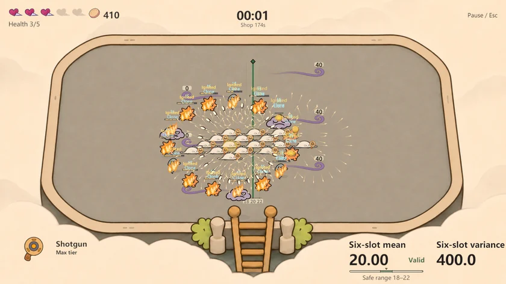
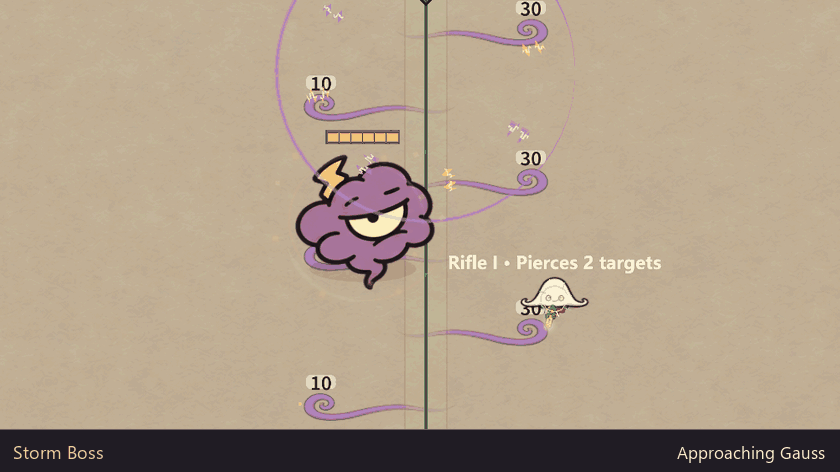
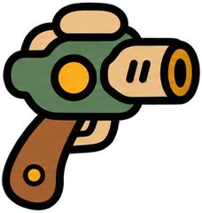
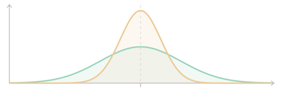
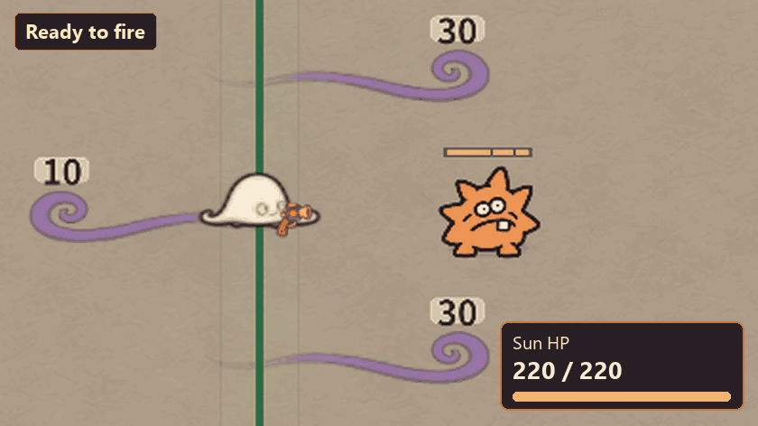
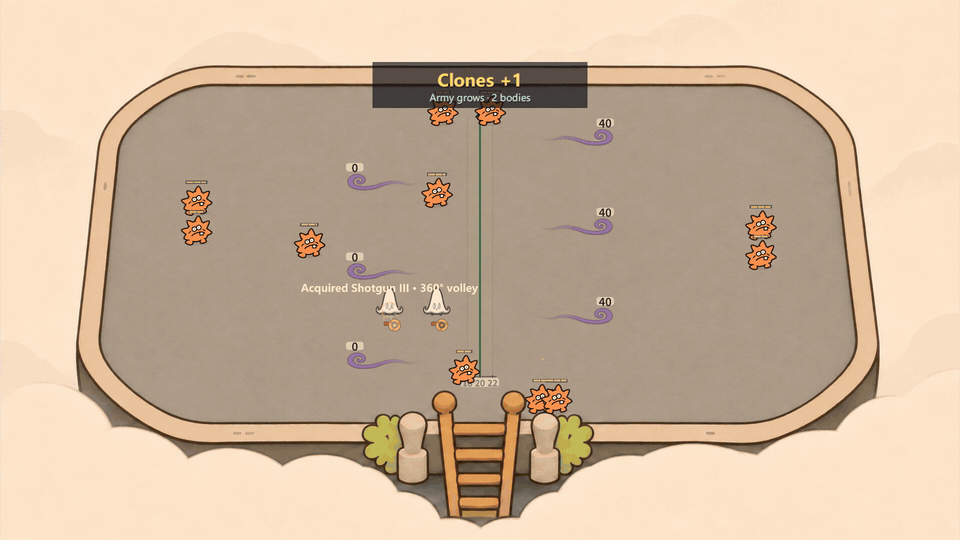
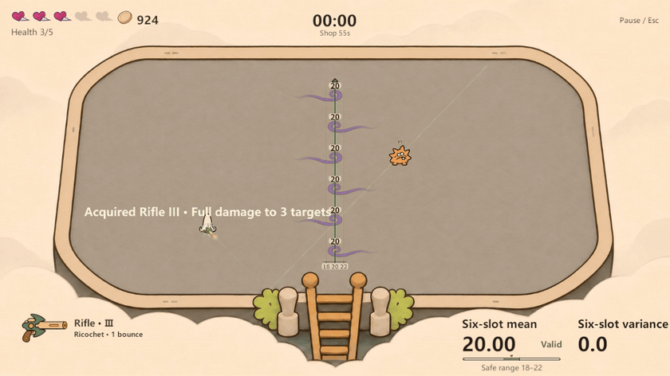

Keep Piercing Bounty
Tier II rifle- Bounty this shot
- +2
- −35
 −21
−21- −21
Play as Gauss, a bell curve with a gun. Cluster your samples to pierce a line of enemies with a rifle, or spread them out for a shotgun blast in every direction.



Move with WASD, aim with the mouse, hold left click to fire, and right-click to calibrate.
StatsShooter is a survivor-style, 2D top-down roguelike shooter.
Basic shots deal direct damage only when the mean of the six samples is between 18 and 22. Lower variance gives the rifle more piercing power. Higher variance widens the shotgun’s spread.

Low-variance rifleAs a statistics major, I found some concepts abstract when they stayed within formulas and calculations. I also enjoy experimenting with combinations in roguelikes. StatsShooter brings those interests together: changing a distribution changes a weapon. I wanted players to build an intuition for mean and variance through upgrade choices and combat feedback.

Both bell curves are centered at 20. Higher variance spreads values out, making the curve and Gauss shorter and wider.

Defeat enemies for coins. The shop opens when the timer runs out.
Each hit replaces one value. A miss keeps the current six.
Regular shots deal base damage when the mean falls within this range.
Clustered values increase rifle piercing. Spread-out values widen the shotgun blast.
The game picks one value to adjust, bringing the mean as close to 20 as possible.
The other five observations stay at 20.
Direct damage active
Direct damage paused
Direct damage restored
The hit that changed the mean still dealt damage.
Chases you and deals damage on contact.
Pushes one sample outward. The mean can leave its range, or your shotgun can gain a tier.
Lightning briefly disables calibration. Correct the mean before it strikes.

Rewrites one sample. Recover the mean while protecting your weapon tier.


Both rifles pierce three enemies. Keep Piercing Bounty to earn two coins on the third hit, or keep Eight-measurement Average to deal full damage to all three.
−21−40Cluster samples to strengthen piercing and hit enemies lined up behind one another.
Spread samples out to widen the blast, eventually firing a ring at enemies on every side.
Ignite pursuing enemies with the high-variance shotgun. When the mean slips out of range, calibrate to summon a clone that fires alongside you.


SparksHits ignite enemies. Burns continue if the mean drifts out of range.
 Ember Sowing
Ember Sowing
Pellets and burning enemies leave embers in their wake.
 Ember Revival
Ember Revival
Wider, longer-lasting embers block the horde’s path.

Extreme CloneCalibration adds clones. Focus their fire to stack burns on one target.
Keep the six samples clustered to hold the rifle’s piercing tier. Lead pursuers into a shot’s return path so the same bullet cuts through the crowd again.


RicochetBullets bounce off one wall.
 Double Wall Circuit
Double Wall Circuit
Bullets can bounce twice.
 Prism Corridor
Prism Corridor
A chain of bounces carries a piercing shot farther across the arena.
 Dual Ricochet or Wall Afterglow
Dual Ricochet or Wall Afterglow
Use the last slot for a second bolt or a slowing patch at the wall.
Automated tests checked the preview against the outcome. Whether it helps players time calibration still needs a playtest.
Looking back, I had a clear idea of how each build should feel once it came together. Working backward from those endgames helped me design the upgrades, but I ended up planning too much of the player’s path. Even when the shop offered different cards, runs tended to play out in similar ways. Players had little room to change course midway through a run or discover a combination for themselves.
I also spent more time thinking about how mean and variance would show up in combat than about when players would need to understand them. Players could see their shotgun’s spread change and still have little reason to think about variance when choosing the next card. That changed how I think about learning through play. I used to ask how clearly the game showed a concept. Now I ask what understanding it helps a player decide, what they might give up, and what they might try next.